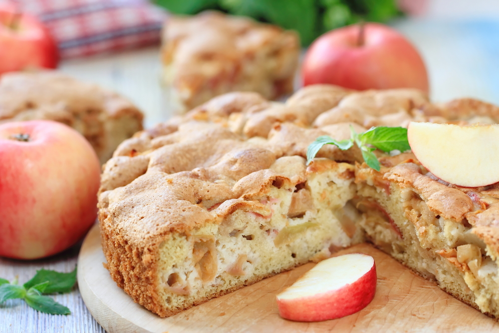
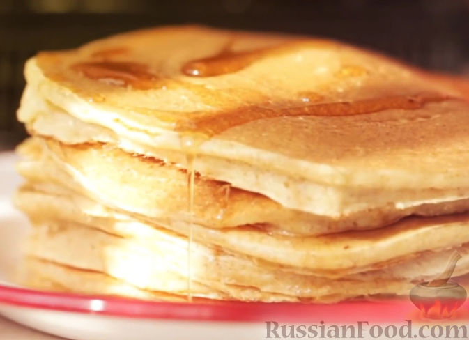
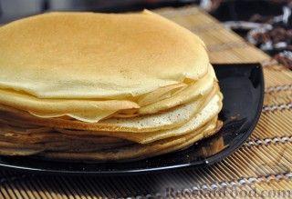
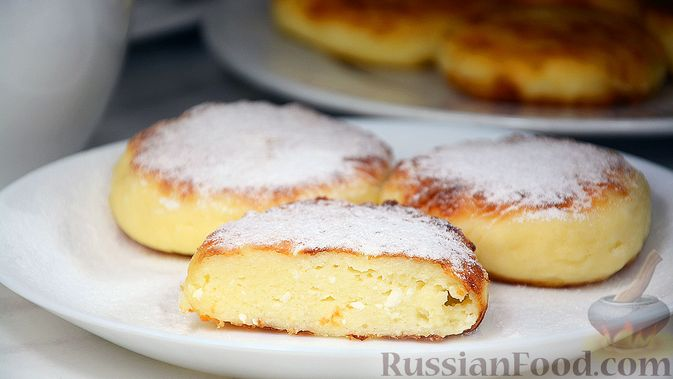

Шарлотка

Продукты
- Яблоки (желательно кислые) - 500-600 г
- Сахар - 160 г
- Мука пшеничная - 160 г
- Яйца - 4 больших или 5 маленьких
- Соль - 1 щепотка
Панкейки

Продукты
- Кефир - 350 мл
- Сахар -1 ст. ложка
- Мука - 1,5 стакана
- Яйца - 3 шт
- Соль - 1 щепотка
- Разрыхлитель - 1 ч. ложка
- Масло сливочное растопленное - 3 ст. ложки
Блины

Продукты
- Молоко - 1 л
- Яйца - 4 шт
- Мука - 400 г
- Соль - 1 ч. ложка
- Сахар - 1 ст. ложка
- Масло сливочное, растопленное - 20 г
Сырники

Продукты
- Творог жирный - 500 г
- Яйца - 1 шт
- Мука - 3 ст. ложки + 2 ст. ложки (для панировки)
- Соль - 1 щепотка
- Сахар - 2 ст. ложка